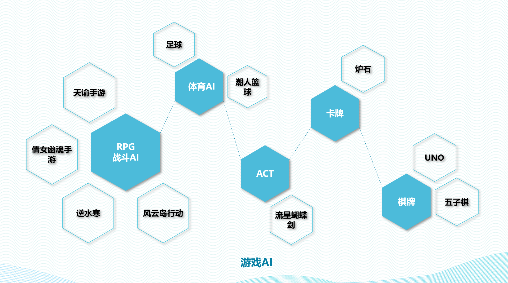
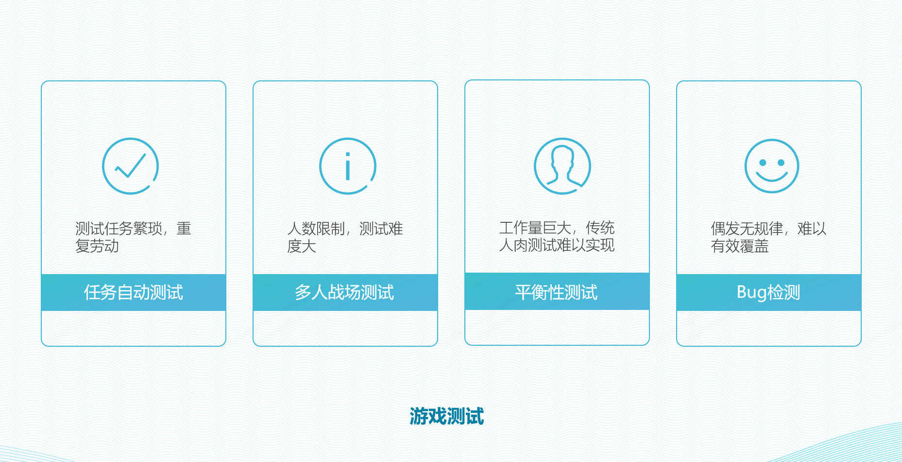

News
- [2020.08.04] One paper is accepted by ICSME 2020.
- [2020.06.11] Two papers are accepted by COG 2020.
- [2020.06.01] One paper is accepted by ICML 2020.
- [2020.04.20] Our two paper are accepted by IJCAI 2020.
- [2020.01.15] Our two papers are accepted by AAMAS 2020.
- [2019.12.25] Our talk "Building Intelligent Game Testing System in Netease MMORPG Game" is accepted by GDC AI Summit 2020.
- [2019.12.20] Our paper "Action Relation Network: Considering the Effects of Actions in Multiagent Systems" is accepted by ICLR 2020.
- [2019.11.11] Our two regular and one workshop papers are accepted by AAAI 2020.
Research Interest
I worked in the field of robotic and multi-agent system during my school period, especially in localization, mapping, navigation, path planing and etc.
Currently, I am leading the reinforcement learning (RL) research in Fuxi AI Lab@Netease, mostly focusing on deep reinforcement learning and Game AI,
including the following topics:
- High-efficient, transferable, explainable deep reinforcement learning
- Distirbuted reinforcement learning framework
- Multi-agent learning
- Imitation learning
- Population-based reinforcement learning
- Game oriented applications of reinforcement learning
Education
| 2012.9-2017.7 |
Ph.D in Robotic Lab, University of Science and Technology of China(USTC) |
Supervisor: Prof. Xiaoping Chen |
| 2008.9-2012.7 |
B.E. in Shcool of Computer Science, China University of Petroleum (UPC) |
Supervisor: Prof. Jiuyun Xu |
Publications
Some interested papers are listed, visit
Google Scholar for completed publications.
-
Yuechen Wu*, Yingfeng Chen*, Xiaofei Xie, Bing Yu, Changjie Fan and Lei Ma,
“"Regression Testing of Massively Multiplayer Online Role-Playing Games,”
Proceedings of the International Conference on Software Maintenance and EvolutionIntelligence(ICSME)
, 2020.
-
Ruimin Shen, Yan Zheng, Jianye Hao, Zhaopeng Meng, Yingfeng Chen♦, Changjie Fan, Yang Liu,
“Generating Behavior-Diverse Game AIs with Evolutionary Multi-Objective Deep Reinforcement Learning,”
Proceedings of the International Joint Conference on Artificial Intelligence(IJCAI)
, 2020.
-
Hangtian Jia, Chunxu Ren, Yujing Hu, Yingfeng Chen♦, Tangjie Lv, Changjie Fan, Hongyao Tang, Jianye Hao,
“Mastering Basketball with Deep Reinforcement Learning: An Integrated Curriculum Training Approach,”
Proceedings of the International Conference on Autonomous Agents and MultiAgent Systems(AAMAS)
, 2020.
-
Yaodong Yang, Jianye Hao, Guangyong Chen, Hongyao Tang, Yingfeng Chen, Yujing Hu, Changjie Fan, Zhongyu Wei;
“Q-value Path Decomposition for Deep Multiagent Reinforcement Learning,”
Proceedings of the International Conference on Machine Learning(ICML), 2020.
-
WenJi Zhou, Yang Yu, Yingfeng Chen, Kai Guai, Tangjie Lv, Changjie Fan, ZhiHua Zhou,
“Reinforcement learning experience reuse with policy residual representation,”
Proceedings of the International Joint Conference on Artificial Intelligence(IJCAI), 2019.
-
Haotian Fu, Hongyao Tang, Jianye Hao; Zihan Lei, Yingfeng Chen, Changjie Fan,
“Deep Multi-Agent Reinforcement Learning with Discrete-Continuous Hybrid Action Spaces,”
Proceedings of the International Joint Conference on Artificial Intelligence(IJCAI), 2019.
-
Yingfeng Chen, Feng Wu, Wei Shuai, Xiaoping Chen,
“Robots serve humans in public places—KeJia robot as a shopping assistant,”
International Journal of Advanced Robotic Systems, 2017.
-
Yingfeng Chen, Shuai Wei, Xiaoping Chen,
“A probabilistic, variable-resolution and effective quadtree representation for mapping of large environments,”
Proceeding of the IEEE International Conference on Advanced Robotics(ICAR), 2015.
Projects
We mainly focusing in landing reinforcement learning to smart game NPC and agent-based game testing, more related possible application are also exploring,such as map generation, GPU cache managerment amd so on.
Game NPC:

Game Tetsing:

Services
- AAAI Member, 2019-Now
- Program Committee Member of NeurIPS 2020
- Program Committee Member of AAAI 2020, AAAI 2021
- Program Committee Member of IJCAI 2020, IJCAI 2021
- Program Committee Member of ECAI 2020
Awards
- Champion of the World Robocup@Home Competition, Brazil, 2015 (The first Asian champion)
- Champion of the China Robocup@Home Open Competition, 2013&2014
- Outstanding Undergraduate, China University of Petroleum, 2012
- First Prize of Province in the competition of "FreeScale Smart Car", 2011
- National Scholarship, Ministry of Education, 2011
- First-class scholarship, 2009&2010
Updating time: 2020.08.30